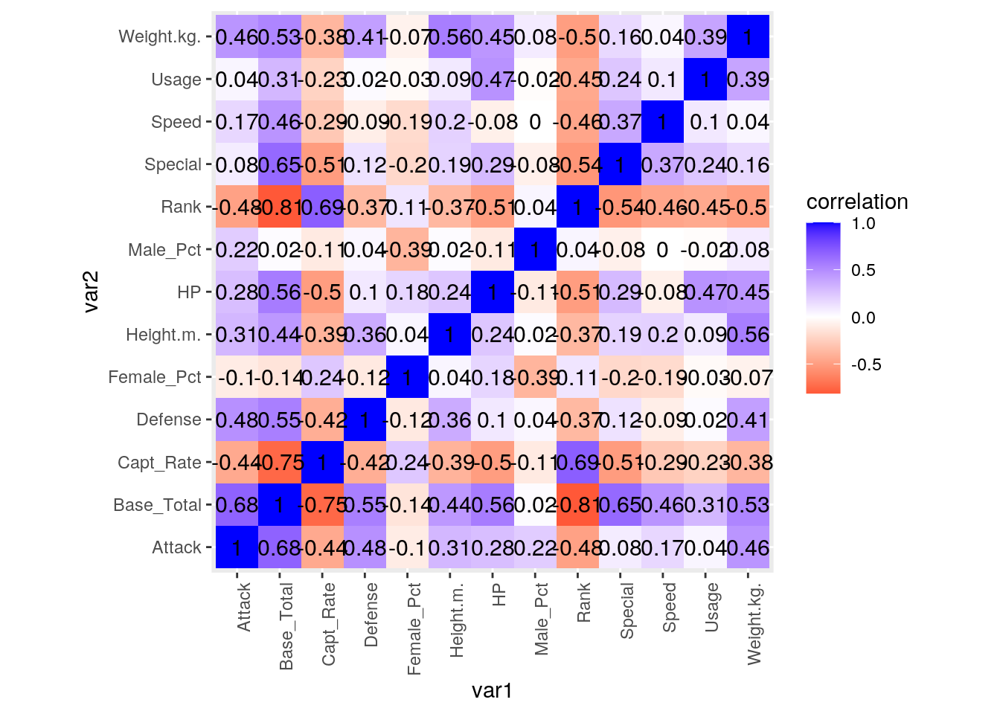
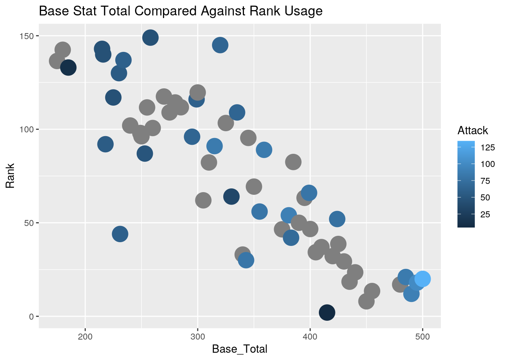
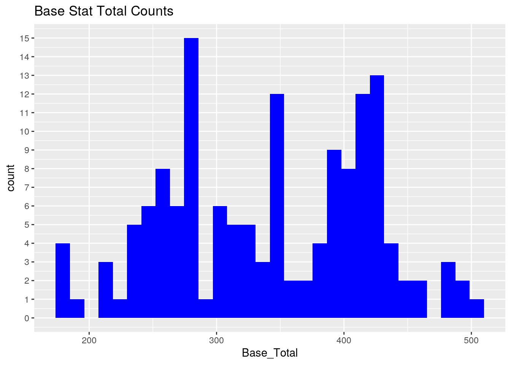
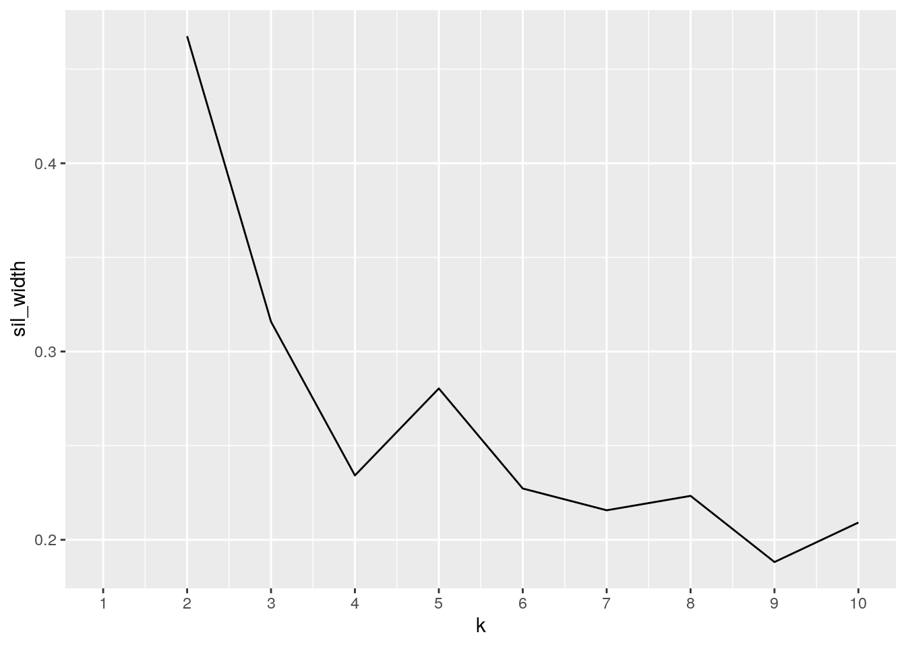
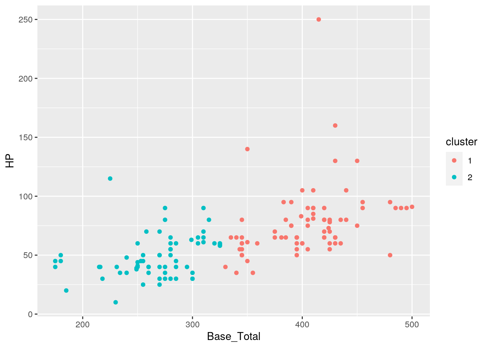
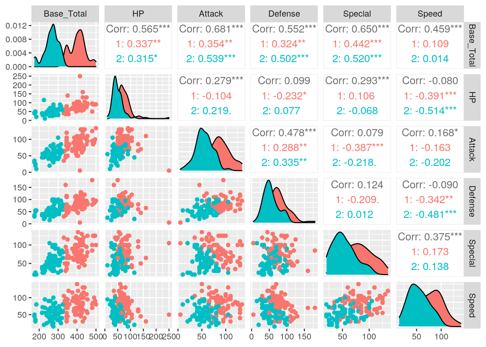
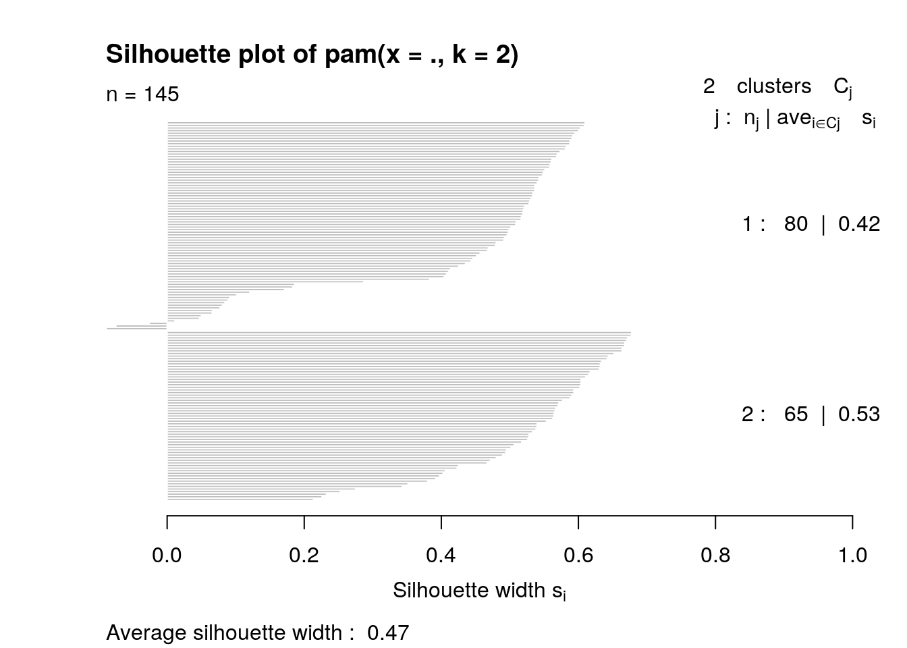

tidyr functions pivot_longer/gather and/or pivot_wider/spread)library("readxl")
library(dplyr)
ou <- read_excel("gen1ou.xlsx")
ou <- ou %>% rename(Usage = `Usage %`, RawPer = `%...5`, RealPer = `%...7`)
head(ou)## # A tibble: 6 x 7
## Rank Pokemon Usage Raw RawPer Real RealPer
## <dbl> <chr> <dbl> <dbl> <dbl> <dbl> <dbl>
## 1 1 Tauros 0.962 28121 0.675 21359 0.622
## 2 2 Chansey 0.888 24431 0.586 20748 0.604
## 3 3 Snorlax 0.841 23284 0.559 19206 0.559
## 4 4 Exeggutor 0.577 18928 0.454 16499 0.480
## 5 5 Starmie 0.497 14295 0.343 12613 0.367
## 6 6 Alakazam 0.375 20168 0.484 17235 0.502glimpse(ou)## Rows: 155
## Columns: 7
## $ Rank <dbl> 1, 2, 3, 4, 5, 6, 7, 8, 9, 10, 11, 12, 13, 14, 15, 16, 17, 18…
## $ Pokemon <chr> "Tauros", "Chansey", "Snorlax", "Exeggutor", "Starmie", "Alak…
## $ Usage <dbl> 0.9616498, 0.8882688, 0.8408913, 0.5768698, 0.4967027, 0.3750…
## $ Raw <dbl> 28121, 24431, 23284, 18928, 14295, 20168, 8197, 6737, 11489, …
## $ RawPer <dbl> 0.67504, 0.58647, 0.55893, 0.45437, 0.34315, 0.48413, 0.19677…
## $ Real <dbl> 21359, 20748, 19206, 16499, 12613, 17235, 7736, 5709, 9253, 9…
## $ RealPer <dbl> 0.62167, 0.60388, 0.55900, 0.48021, 0.36711, 0.50163, 0.22516…gen1 <- read.csv("FirstGenPokemon.csv", header = TRUE)
head(gen1)## Number Name Types Type1 Type2 Height.m. Weight.kg. Male_Pct Female_Pct
## 1 1 Bulbasaur 2 grass poison 0.7 6.9 87.5 12.5
## 2 2 Ivysaur 2 grass poison 1.0 13.0 87.5 12.5
## Capt_Rate Exp_Points Exp_Speed Base_Total HP Attack Defense Special Speed
## 1 45 1059860 Medium Slow 253 45 49 49 65 45
## 2 45 1059860 Medium Slow 325 60 62 63 80 60
## Normal_Dmg Fire_Dmg Water_Dmg Eletric_Dmg Grass_Dmg Ice_Dmg Fight_Dmg
## 1 1 2 0.5 0.5 0.25 2 0.5
## 2 1 2 0.5 0.5 0.25 2 0.5
## Poison_Dmg Ground_Dmg Flying_Dmg Psychic_Dmg Bug_Dmg Rock_Dmg Ghost_Dmg
## 1 1 1 2 2 4 1 1
## 2 1 1 2 2 4 1 1
## Dragon_Dmg Evolutions Legendary
## 1 1 2 0
## 2 1 2 0
## [ reached 'max' / getOption("max.print") -- omitted 4 rows ]glimpse(gen1)## Rows: 151
## Columns: 35
## $ Number <int> 1, 2, 3, 4, 5, 6, 7, 8, 9, 10, 11, 12, 13, 14, 15, 16, 17…
## $ Name <fct> Bulbasaur, Ivysaur, Venusaur, Charmander, Charmeleon, Cha…
## $ Types <int> 2, 2, 2, 1, 1, 2, 1, 1, 1, 1, 1, 2, 2, 2, 2, 2, 2, 2, 1, …
## $ Type1 <fct> grass, grass, grass, fire, fire, fire, water, water, wate…
## $ Type2 <fct> poison, poison, poison, None, None, flying, None, None, N…
## $ Height.m. <dbl> 0.7, 1.0, 2.0, 0.6, 1.1, 1.7, 0.5, 1.0, 1.6, 0.3, 0.7, 1.…
## $ Weight.kg. <dbl> 6.9, 13.0, 100.0, 8.5, 19.0, 90.5, 9.0, 22.5, 85.5, 2.9, …
## $ Male_Pct <dbl> 87.5, 87.5, 87.5, 87.5, 87.5, 87.5, 87.5, 87.5, 87.5, 50.…
## $ Female_Pct <dbl> 12.5, 12.5, 12.5, 12.5, 12.5, 12.5, 12.5, 12.5, 12.5, 50.…
## $ Capt_Rate <int> 45, 45, 45, 45, 45, 45, 45, 45, 45, 255, 120, 45, 255, 12…
## $ Exp_Points <int> 1059860, 1059860, 1059860, 1059860, 1059860, 1059860, 105…
## $ Exp_Speed <fct> Medium Slow, Medium Slow, Medium Slow, Medium Slow, Mediu…
## $ Base_Total <int> 253, 325, 425, 249, 325, 425, 250, 325, 425, 175, 180, 30…
## $ HP <int> 45, 60, 80, 39, 58, 78, 44, 59, 79, 45, 50, 60, 40, 45, 6…
## $ Attack <int> 49, 62, 82, 52, 64, 84, 48, 63, 83, 30, 20, 45, 35, 25, 8…
## $ Defense <int> 49, 63, 83, 43, 58, 78, 65, 80, 100, 35, 55, 50, 30, 50, …
## $ Special <int> 65, 80, 100, 50, 65, 85, 50, 65, 85, 20, 25, 80, 20, 25, …
## $ Speed <int> 45, 60, 80, 65, 80, 100, 43, 58, 78, 45, 30, 70, 50, 35, …
## $ Normal_Dmg <dbl> 1, 1, 1, 1, 1, 1, 1, 1, 1, 1, 1, 1, 1, 1, 1, 1, 1, 1, 1, …
## $ Fire_Dmg <dbl> 2.0, 2.0, 2.0, 0.5, 0.5, 0.5, 0.5, 0.5, 0.5, 2.0, 2.0, 2.…
## $ Water_Dmg <dbl> 0.5, 0.5, 0.5, 2.0, 2.0, 2.0, 0.5, 0.5, 0.5, 1.0, 1.0, 1.…
## $ Eletric_Dmg <dbl> 0.5, 0.5, 0.5, 1.0, 1.0, 2.0, 2.0, 2.0, 2.0, 1.0, 1.0, 2.…
## $ Grass_Dmg <dbl> 0.25, 0.25, 0.25, 0.50, 0.50, 0.25, 2.00, 2.00, 2.00, 0.5…
## $ Ice_Dmg <dbl> 2.0, 2.0, 2.0, 1.0, 1.0, 2.0, 0.5, 0.5, 0.5, 1.0, 1.0, 2.…
## $ Fight_Dmg <dbl> 0.50, 0.50, 0.50, 1.00, 1.00, 0.50, 1.00, 1.00, 1.00, 0.5…
## $ Poison_Dmg <dbl> 1.0, 1.0, 1.0, 1.0, 1.0, 1.0, 1.0, 1.0, 1.0, 2.0, 2.0, 2.…
## $ Ground_Dmg <dbl> 1.0, 1.0, 1.0, 2.0, 2.0, 0.0, 1.0, 1.0, 1.0, 0.5, 0.5, 0.…
## $ Flying_Dmg <dbl> 2.0, 2.0, 2.0, 1.0, 1.0, 1.0, 1.0, 1.0, 1.0, 2.0, 2.0, 2.…
## $ Psychic_Dmg <dbl> 2, 2, 2, 1, 1, 1, 1, 1, 1, 1, 1, 1, 2, 2, 2, 1, 1, 1, 1, …
## $ Bug_Dmg <dbl> 4.00, 4.00, 4.00, 0.50, 0.50, 0.25, 1.00, 1.00, 1.00, 1.0…
## $ Rock_Dmg <dbl> 1, 1, 1, 2, 2, 4, 1, 1, 1, 2, 2, 4, 2, 2, 2, 2, 2, 2, 1, …
## $ Ghost_Dmg <int> 1, 1, 1, 1, 1, 1, 1, 1, 1, 1, 1, 1, 1, 1, 1, 0, 0, 0, 0, …
## $ Dragon_Dmg <int> 1, 1, 1, 1, 1, 1, 1, 1, 1, 1, 1, 1, 1, 1, 1, 1, 1, 1, 1, …
## $ Evolutions <int> 2, 2, 2, 2, 2, 2, 2, 2, 2, 2, 2, 2, 2, 2, 2, 2, 2, 2, 1, …
## $ Legendary <int> 0, 0, 0, 0, 0, 0, 0, 0, 0, 0, 0, 0, 0, 0, 0, 0, 0, 0, 0, …I have chosen Pokemon as my topic for this project since it is something that is very close to me as well as it having a surprisingly deep foundation in numbers and statistics. I used two datasets for this project. Although Pokemon has 8 generations worth of material, when considering the available online datasets, I have chosen to focus on the first generation. The first dataset (gen1ou) was taken off of smogon.com, the place of online, competitive Pokemon battling. It comprises of the usage statistics of each generation 1 Pokemon during the month of Marth 2021 for the online generation 1 OU metagame. The second dataset (FirstGenPokemon) was taken from kaggle uploaded by Alejandro Ojeda (https://www.kaggle.com/dizzypanda/gen-1-pokemon). This dataset contains all the essential information of all the generation 1 pokemon. Moving onto part one of the project, I first loaded in the necessary packages. Afterwards, I familiarized myself with each dataset using the head() and glimpse() commands. I noticed that the ou dataset had headers that were named improperly so I went ahead and changed those into ones that would work. Since both datasets were tidy to start off with, I will untidy them and then tidy them in part 2 of the project, after I join the datasets together.
dplyr join functionlibrary(tidyverse)
joined <- ou %>% inner_join(gen1, by = c(Pokemon = "Name")) %>%
select(-c(4:9, 11, 17, 25:41))
glimpse(joined)## Rows: 145
## Columns: 16
## $ Rank <dbl> 1, 2, 3, 4, 5, 6, 7, 8, 9, 10, 11, 12, 13, 14, 15, 16, 17,…
## $ Pokemon <chr> "Tauros", "Chansey", "Snorlax", "Exeggutor", "Starmie", "A…
## $ Usage <dbl> 0.9616498, 0.8882688, 0.8408913, 0.5768698, 0.4967027, 0.3…
## $ Type1 <fct> normal, normal, normal, grass, water, psychic, ice, water,…
## $ Height.m. <dbl> 1.4, 1.1, 2.1, 2.0, 1.1, 1.5, 1.4, 1.5, 1.9, 1.5, 0.8, 1.6…
## $ Weight.kg. <dbl> 88.4, 34.6, 460.0, 120.0, 80.0, 48.0, 40.6, 132.5, 120.0, …
## $ Male_Pct <dbl> 100.0, 0.0, 87.5, 50.0, 0.0, 75.0, 0.0, 50.0, 50.0, 50.0, …
## $ Female_Pct <dbl> 0.0, 100.0, 12.5, 50.0, 0.0, 25.0, 100.0, 50.0, 50.0, 50.0…
## $ Capt_Rate <int> 45, 30, 25, 45, 60, 50, 45, 60, 60, 45, 45, 3, 90, 75, 45,…
## $ Exp_Speed <fct> Slow, Fast, Slow, Slow, Slow, Medium Slow, Medium Fast, Sl…
## $ Base_Total <int> 450, 415, 430, 455, 435, 405, 340, 480, 440, 425, 430, 490…
## $ HP <int> 75, 250, 160, 95, 60, 55, 65, 50, 105, 60, 65, 90, 65, 95,…
## $ Attack <int> 100, 5, 110, 95, 75, 50, 50, 95, 130, 65, 65, 90, 70, 75, …
## $ Defense <int> 95, 5, 65, 85, 85, 45, 35, 180, 120, 60, 60, 85, 60, 110, …
## $ Special <int> 70, 105, 65, 125, 100, 135, 95, 85, 45, 130, 110, 125, 65,…
## $ Speed <int> 110, 50, 30, 55, 115, 120, 95, 70, 40, 110, 130, 100, 115,…untidy <- joined %>% pivot_wider(names_from = "Type1", values_from = "Pokemon")
joined %>% pivot_wider(names_from = "Type1", values_from = "Pokemon") %>%
head()## # A tibble: 6 x 28
## Rank Usage Height.m. Weight.kg. Male_Pct Female_Pct Capt_Rate Exp_Speed
## <dbl> <dbl> <dbl> <dbl> <dbl> <dbl> <int> <fct>
## 1 1 0.962 1.4 88.4 100 0 45 Slow
## 2 2 0.888 1.1 34.6 0 100 30 Fast
## 3 3 0.841 2.1 460 87.5 12.5 25 Slow
## 4 4 0.577 2 120 50 50 45 Slow
## 5 5 0.497 1.1 80 0 0 60 Slow
## 6 6 0.375 1.5 48 75 25 50 Medium S…
## # … with 20 more variables: Base_Total <int>, HP <int>, Attack <int>,
## # Defense <int>, Special <int>, Speed <int>, normal <chr>, grass <chr>,
## # water <chr>, psychic <chr>, ice <chr>, ground <chr>, ghost <chr>,
## # electric <chr>, rock <chr>, fire <chr>, dragon <chr>, fighting <chr>,
## # bug <chr>, poison <chr>tidy <- untidy %>% pivot_longer(c(15:28), names_to = "Type1",
values_to = "Pokemon", values_drop_na = T)
untidy %>% pivot_longer(c(15:28), names_to = "Type1", values_to = "Pokemon",
values_drop_na = T) %>% head()## # A tibble: 6 x 16
## Rank Usage Height.m. Weight.kg. Male_Pct Female_Pct Capt_Rate Exp_Speed
## <dbl> <dbl> <dbl> <dbl> <dbl> <dbl> <int> <fct>
## 1 1 0.962 1.4 88.4 100 0 45 Slow
## 2 2 0.888 1.1 34.6 0 100 30 Fast
## 3 3 0.841 2.1 460 87.5 12.5 25 Slow
## 4 4 0.577 2 120 50 50 45 Slow
## 5 5 0.497 1.1 80 0 0 60 Slow
## 6 6 0.375 1.5 48 75 25 50 Medium S…
## # … with 8 more variables: Base_Total <int>, HP <int>, Attack <int>,
## # Defense <int>, Special <int>, Speed <int>, Type1 <chr>, Pokemon <chr>When joining the two datasets, I used the Pokemon names column since both datasets had it as an identifier. Ideally, left, right, and inner join would all work since each dataset should have their headers and exactly 151 pokemon. However, the ou dataset contains pokemon usable in the OU metagame. Sadly, this does not include Mewtwo or Mew, so this dataset only had 149 pokemon. To make the OU dataset more stubborn, there were an additional 6 observations of NAs for some reason at the end of the dataset, making the total observation number 155. On the otherhand, the gen1ou dataset had the ideal 151 observations. Since the ou dataset was missing Mewtwo and Mew and had some additional NAs, I used the inner_join function to join the two datasets so that both would have a matching number of observations/Pokemon. Moving onto the code, I first loaded up the tidyverse package for later use. Then, I joined the gen1ou dataset to the ou dataset so that I didn’t have to scroll all the way to the right to view the ou dataset’s data once joined. Additionally, from part 1 of the project, this is where I demonstrated untidying the data and then tidying it up again. THe joined dataset was untidyed via pivot_wider, which takes the cells in the Type1 column and makes each cell into their own column with values filled in from the Pokemon column. To tidy the dataset up again, I used pivot_longer to take column names 15-28, take away the NAs, make them into one column, and placed the values back into the Pokemon column
dplyr functions in the service of generating summary tables/statistics (12 pts)
summarize alone and with group_by (if you have more than 10 variables, fine to just focus on 10) (20 pts)
joined %>% filter(Type1 == "normal")## # A tibble: 23 x 16
## Rank Pokemon Usage Type1 Height.m. Weight.kg. Male_Pct Female_Pct
## <dbl> <chr> <dbl> <fct> <dbl> <dbl> <dbl> <dbl>
## 1 1 Tauros 9.62e-1 norm… 1.4 88.4 100 0
## 2 2 Chansey 8.88e-1 norm… 1.1 34.6 0 100
## 3 3 Snorlax 8.41e-1 norm… 2.1 460 87.5 12.5
## 4 13 Persian 9.75e-2 norm… 1 32 50 50
## 5 22 Dodrio 1.91e-2 norm… 1.8 85.2 50 50
## 6 24 Kangas… 9.11e-3 norm… 2.2 80 0 100
## 7 30 Ratica… 4.86e-3 norm… 0.7 18.5 50 50
## 8 34 Porygon 3.10e-3 norm… 0.8 36.5 0 0
## 9 42 Clefab… 1.17e-3 norm… 1.3 40 25 75
## 10 44 Spearow 9.43e-4 norm… 0.3 2 50 50
## # … with 13 more rows, and 8 more variables: Capt_Rate <int>, Exp_Speed <fct>,
## # Base_Total <int>, HP <int>, Attack <int>, Defense <int>, Special <int>,
## # Speed <int>joined %>% arrange(desc(Speed))## # A tibble: 145 x 16
## Rank Pokemon Usage Type1 Height.m. Weight.kg. Male_Pct Female_Pct
## <dbl> <chr> <dbl> <fct> <dbl> <dbl> <dbl> <dbl>
## 1 43 Electr… 9.65e-4 elec… 1.2 66.6 0 0
## 2 11 Jolteon 1.78e-1 elec… 0.8 24.5 87.5 12.5
## 3 38 Aeroda… 2.35e-3 rock 1.8 59 87.5 12.5
## 4 6 Alakaz… 3.75e-1 psyc… 1.5 48 75 25
## 5 56 Dugtrio 5.14e-4 grou… 0.7 33.3 50 50
## 6 5 Starmie 4.97e-1 water 1.1 80 0 0
## 7 13 Persian 9.75e-2 norm… 1 32 50 50
## 8 1 Tauros 9.62e-1 norm… 1.4 88.4 100 0
## 9 10 Gengar 1.93e-1 ghost 1.5 40.5 50 50
## 10 41 Scyther 1.89e-3 bug 1.5 56 50 50
## # … with 135 more rows, and 8 more variables: Capt_Rate <int>, Exp_Speed <fct>,
## # Base_Total <int>, HP <int>, Attack <int>, Defense <int>, Special <int>,
## # Speed <int>joined %>% select(Pokemon, Base_Total, Usage) %>% arrange(desc(Base_Total))## # A tibble: 145 x 3
## Pokemon Base_Total Usage
## <chr> <int> <dbl>
## 1 Dragonite 500 0.0223
## 2 Moltres 495 0.0264
## 3 Zapdos 490 0.133
## 4 Articuno 485 0.0208
## 5 Cloyster 480 0.242
## 6 Gyarados 480 0.00713
## 7 Exeggutor 455 0.577
## 8 Arcanine 455 0.0111
## 9 Tauros 450 0.962
## 10 Lapras 450 0.0899
## # … with 135 more rowsjoined %>% mutate(BMI = Weight.kg./(Height.m.)^2) %>% select(Pokemon,
BMI) %>% arrange(desc(BMI))## # A tibble: 145 x 2
## Pokemon BMI
## <chr> <dbl>
## 1 Golem 153.
## 2 Geodude 125.
## 3 Rhyhorn 115
## 4 Mankey 112
## 5 Graveler 105
## 6 Snorlax 104.
## 7 Seel 74.4
## 8 Eevee 72.2
## 9 Dugtrio 68.0
## 10 Magnemite 66.7
## # … with 135 more rowsjoined %>% summarize(mean(Male_Pct), sd(Male_Pct), mean(Female_Pct),
sd(Female_Pct))## # A tibble: 1 x 4
## `mean(Male_Pct)` `sd(Male_Pct)` `mean(Female_Pct)` `sd(Female_Pct)`
## <dbl> <dbl> <dbl> <dbl>
## 1 51.8 24.8 40.6 23.0joined %>% group_by(Type1) %>% summarize(mean(Base_Total), sd(Base_Total),
n(), max(Usage), first(Rank))## # A tibble: 14 x 6
## Type1 `mean(Base_Total)` `sd(Base_Total)` `n()` `max(Usage)` `first(Rank)`
## <fct> <dbl> <dbl> <int> <dbl> <dbl>
## 1 bug 282. 95.9 12 0.00383 33
## 2 dragon 367. 126. 3 0.0223 20
## 3 electric 368. 80.5 9 0.178 11
## 4 fighting 339. 57.4 7 0.00908 25
## 5 fire 374. 82.7 12 0.0264 18
## 6 ghost 350 75 3 0.193 10
## 7 grass 344. 71.4 12 0.577 4
## 8 ground 330 70.6 8 0.201 9
## 9 ice 412. 103. 2 0.322 7
## 10 normal 324. 76.3 23 0.962 1
## 11 poison 336. 72.2 12 0.00253 36
## 12 psychic 337 69.7 5 0.375 6
## 13 rock 363. 66.1 9 0.0494 16
## 14 water 351. 82.2 28 0.497 5joined %>% group_by(Type1, Exp_Speed) %>% summarize(mean(Capt_Rate))## # A tibble: 32 x 3
## # Groups: Type1 [14]
## Type1 Exp_Speed `mean(Capt_Rate)`
## <fct> <fct> <dbl>
## 1 bug Medium Fast 129.
## 2 bug Slow 45
## 3 dragon Slow 45
## 4 electric Medium Fast 107.
## 5 electric Slow 3
## 6 fighting Medium Fast 88.8
## 7 fighting Medium Slow 105
## 8 fire Medium Fast 101.
## 9 fire Medium Slow 45
## 10 fire Slow 89.3
## # … with 22 more rowsUsing all the dplyr functions was quite simple. All I had to do was pipe the joined dataset into each function and then specify the data that I wanted the function to use. From these results, there were a few interesting one. From the arrange function, it seems that pure speed does not necessarily mean a high usage statistic. Also interesting that the small monkey Mankey had a higher BMI than a rock rhino. Lastly, it seems that the ice typing had the highest average base stat total, ironic considering that it is the worst defensive type.
Make visualizations (three plots)
stat="summary"Create a correlation heatmap of your numeric variables the way we did in class
Create two more effective, polished plots with ggplot
library(tidyverse)
cormat<-joined%>%select_if(is.numeric)%>%cor(use="pair")
cormat## Rank Usage Height.m. Weight.kg. Male_Pct
## Rank 1.00000000 -0.44511189 -0.37130288 -0.50016869 0.0435838597
## Usage -0.44511189 1.00000000 0.09373490 0.39058908 -0.0168970662
## Height.m. -0.37130288 0.09373490 1.00000000 0.55934997 0.0163650911
## Weight.kg. -0.50016869 0.39058908 0.55934997 1.00000000 0.0848420717
## Male_Pct 0.04358386 -0.01689707 0.01636509 0.08484207 1.0000000000
## Female_Pct 0.11195650 -0.02729960 0.04356212 -0.06915718 -0.3855785306
## Capt_Rate 0.69493536 -0.23190128 -0.39352139 -0.37918844 -0.1121616099
## Female_Pct Capt_Rate Base_Total HP Attack
## Rank 0.11195650 0.6949354 -0.81161781 -0.50616075 -0.48475313
## Usage -0.02729960 -0.2319013 0.30986549 0.47053400 0.04364638
## Height.m. 0.04356212 -0.3935214 0.44484869 0.24314377 0.30874120
## Weight.kg. -0.06915718 -0.3791884 0.52722509 0.45110685 0.45841449
## Male_Pct -0.38557853 -0.1121616 0.01837914 -0.11052544 0.21735466
## Female_Pct 1.00000000 0.2380275 -0.14186556 0.17932936 -0.10026377
## Capt_Rate 0.23802750 1.0000000 -0.74772769 -0.50411736 -0.44423256
## Defense Special Speed
## Rank -0.36586477 -0.53672960 -0.4634382018
## Usage 0.02191714 0.24419805 0.0966774131
## Height.m. 0.35887539 0.18908016 0.1953932798
## Weight.kg. 0.41345165 0.16355858 0.0374522066
## Male_Pct 0.03812334 -0.07686104 -0.0001860945
## Female_Pct -0.11611589 -0.20171791 -0.1895715248
## Capt_Rate -0.41975288 -0.50861742 -0.2876623439
## [ reached getOption("max.print") -- omitted 6 rows ]tidycor <- cormat %>% as.data.frame %>% rownames_to_column("var1") %>%
pivot_longer(-1,names_to="var2",values_to="correlation")
tidycor## # A tibble: 169 x 3
## var1 var2 correlation
## <chr> <chr> <dbl>
## 1 Rank Rank 1
## 2 Rank Usage -0.445
## 3 Rank Height.m. -0.371
## 4 Rank Weight.kg. -0.500
## 5 Rank Male_Pct 0.0436
## 6 Rank Female_Pct 0.112
## 7 Rank Capt_Rate 0.695
## 8 Rank Base_Total -0.812
## 9 Rank HP -0.506
## 10 Rank Attack -0.485
## # … with 159 more rowstidycor%>%ggplot(aes(var1,var2,fill=correlation))+
geom_tile()+
scale_fill_gradient2(low="red",mid="white",high="blue")+ #makes colors!
geom_text(aes(label=round(correlation,2)),color = "black", size = 4)+ #overlay values
theme(axis.text.x = element_text(angle = 90, hjust=1))+ #flips x-axis labels
coord_fixed() #makes it square
library(ggplot2)
plot1<-data.frame(joined)
ggplot(plot1,aes(Base_Total, Rank, color=Attack))+geom_point(stat="summary",size=7)+ggtitle("Base Stat Total Compared Against Rank Usage")
ggplot(plot1,aes(Base_Total))+geom_histogram(fill="blue")+ggtitle("Base Stat Total Counts")+scale_y_continuous(breaks=seq(0,15,1))
The scatterplot shows that as the base stat total increases, the rank usage of the pokemon decreases. Which is to be expected since a Pokemon with more base stats should be stronger. Additionally, although not strong, it would also seem that as the base stat total increases and the rank decreases, the attack stat also increases, which again makes sense since a high attack stat is indicative of a strong pokemon. The histogram shows that the distribution of base stat totals across the generation 1 Pokemon is definitely not normally distributed.
Either k-means/PAM clustering or PCA (inclusive “or”) should be performed on at least three of your variables (3 is just the minimum: using more/all of them will make this much more interesting!)
library(cluster)
clust_data <- joined %>% select(Base_Total, HP, Attack, Defense,
Special, Speed)
sil_width <- vector()
for (i in 2:10) {
kms <- kmeans(clust_data, centers = i)
sil <- silhouette(kms$cluster, dist(clust_data))
sil_width[i] <- mean(sil[, 3])
}
ggplot() + geom_line(aes(x = 1:10, y = sil_width)) + scale_x_continuous(name = "k",
breaks = 1:10)
pam1 <- clust_data %>% pam(k = 2)
pam1## Medoids:
## ID Base_Total HP Attack Defense Special Speed
## [1,] 48 405 80 82 78 80 85
## [2,] 129 255 50 52 48 50 55
## Clustering vector:
## [1] 1 1 1 1 1 1 1 1 1 1 1 1 1 1 1 1 1 1 1 1 1 1 1 1 1 1 1 1 1 1 1 1 1 2 1 1 1
## [38] 1 1 1 1 1 2 1 1 2 1 1 2 1 1 1 1 1 1 1 1 1 1 1 1 2 1 1 1 1 1 1 1 1 1 1 1 2
## [75] 2 1 2 1 1 1 1 2 1 1 2 2 1 2 2 2 2 2 2 2 2 2 2 2 2 2
## [ reached getOption("max.print") -- omitted 45 entries ]
## Objective function:
## build swap
## 69.45808 59.86205
##
## Available components:
## [1] "medoids" "id.med" "clustering" "objective" "isolation"
## [6] "clusinfo" "silinfo" "diss" "call" "data"pamclust <- clust_data %>% mutate(cluster = as.factor(pam1$clustering))
pamclust %>% ggplot(aes(Base_Total, HP, color = cluster)) + geom_point()
library(GGally)
joined %>% mutate(cluster = as.factor(pam1$clustering)) %>% ggpairs(columns = c("Base_Total",
"HP", "Attack", "Defense", "Special", "Speed"), aes(color = cluster))
plot(pam1, which = 2)
Right on to the code, I first started by loading the cluster package. Using for-loops, I calculated that the optimal number of clusters by a long shot was 2 clusters. PAM clusterin with two clusters yielded a pairwise combination chart of all the input variable and a chart displaying average silhouette width. Looking at the pairwise combinations, it can be seen that there is not a strong correlation, in either direction, for any of the stat/base stat combinations. Since a high silhouette width would mean that clusters are more precise and distinct, the result of an average silhouette width/goodness-of-fit of 0.47 can be interpreted as the structure being weak and could be artificial. In terms of the project, this would mean that there is probably not a significant difference between any of the stats and between the base stat total and any of the stats, at least in generation 1.